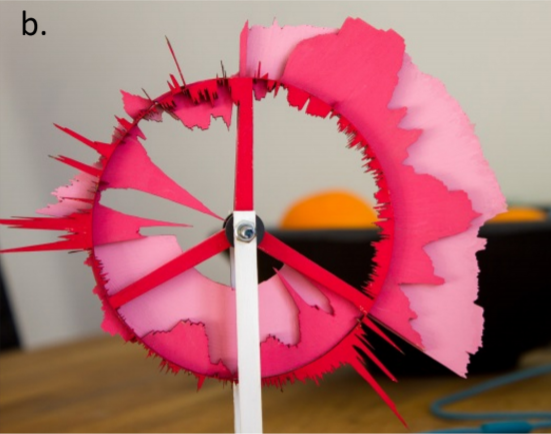

Arash(Ali) Mahdavi-Amiri

I am an assistant professor in the School of Computing Science, Simon Fraser University, the director of Master of Science in Professional Computer Science, and the director of research at MARZ. I lead and manage several industrial and research projects related to Computer Vision, Machine Learning, and Computational Fabrication. My main research interest is Computer Graphics with specialty in Geometric Modeling, Digital Fabrication, Machine Learning, and Computer Vision. I have received several awards including NSERC Postdoctoral Fellowship, J.B. Hyne Research Innovation Award, Michael A. J. Sweeney Award, and Teaching Excellence Award.
Publications
2024


2023

2022
- Data to Physicalization: A Survey of the Physical Rendering Process Computer Graphics Forum (EuroVis STAR), 2021 paper

2021
- Data to Physicalization: A Survey of the Physical Rendering Process Computer Graphics Forum (EuroVis STAR), 2021 paper
News
| May 2024 | “Congrats to Mehdi Safaee and Aryan Mikaeili for successfully defending their MSc thesis. Their theses were both passed "as is", which is a great achievement.” |
| May 2024 | “Congrats to Jiayi for successfully passing her PhD depth exam.” |